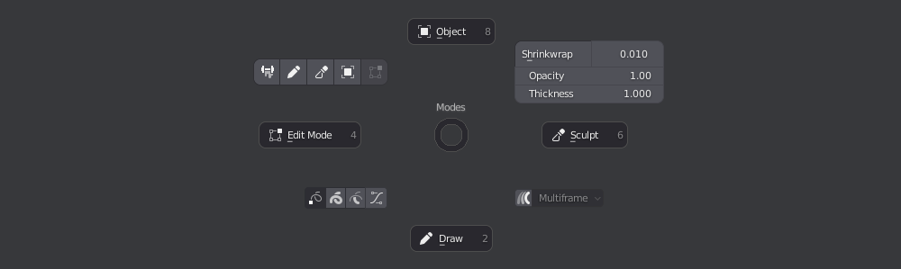
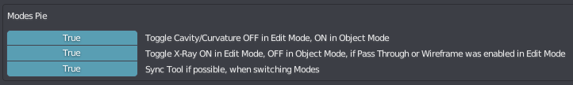

Modes Pie
shortcut Tab
The Modes Pie is used to switch between the various modes Blender offers.
In addition, the pie also exposes useful tools and options in some cases.
Some objects - such as empties - don't have modes to switch, but the pie still provides access to useful tools, such as in the case of group empties.
a mesh object in object mode
a mesh object in edit mode, with Surface Slide, Occlude/Passthrough and Auto Merge toggles
What modes and related tools and options are available, depends on the selected object type.
 modes of a grease pencil object, with quick access to some modifiers and a custom Shrinkwrap tool
Preferences
The Modes Pie features some automated behavior, which you can adjust in the addon preferences.

Adjustable Top Button
Empties
Sculpt Mode
Linked Objects
Make Local
Library Reload
Linked Armature Library Override
Modes Pie Introduction
Note
The following is an old video, and some of the features described above are not yet present.
Also, the Rotate Around Selection feature has been removed since.